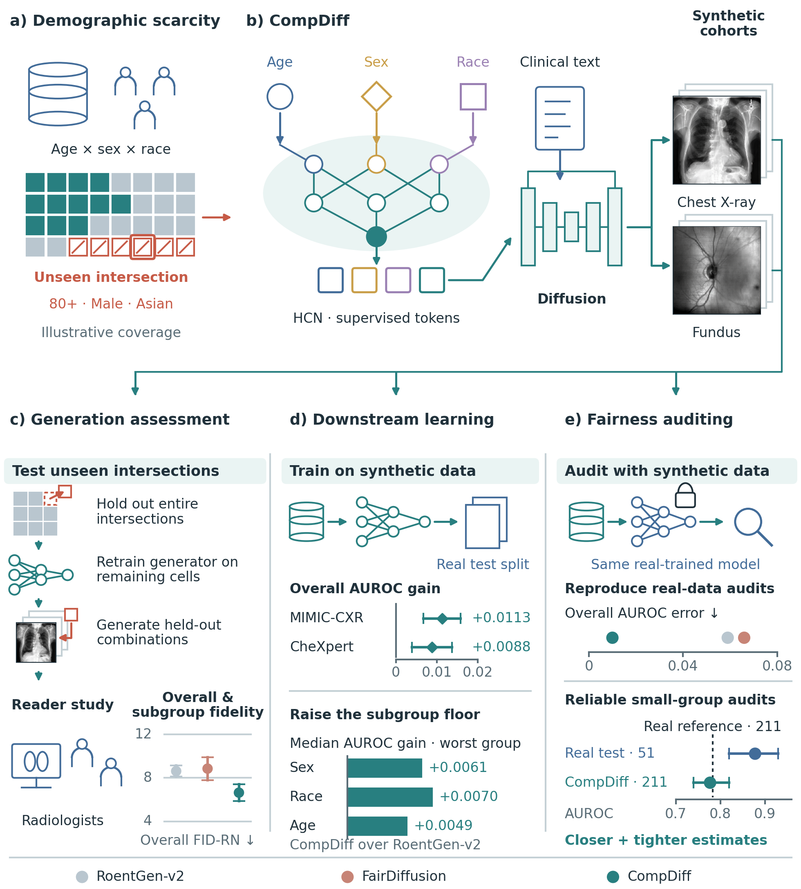
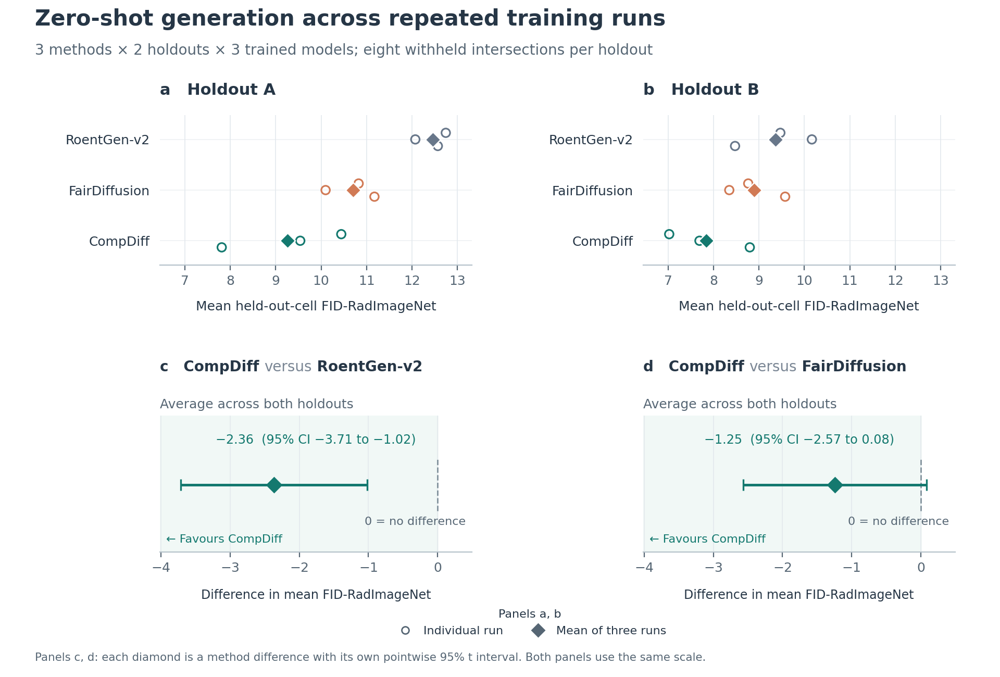
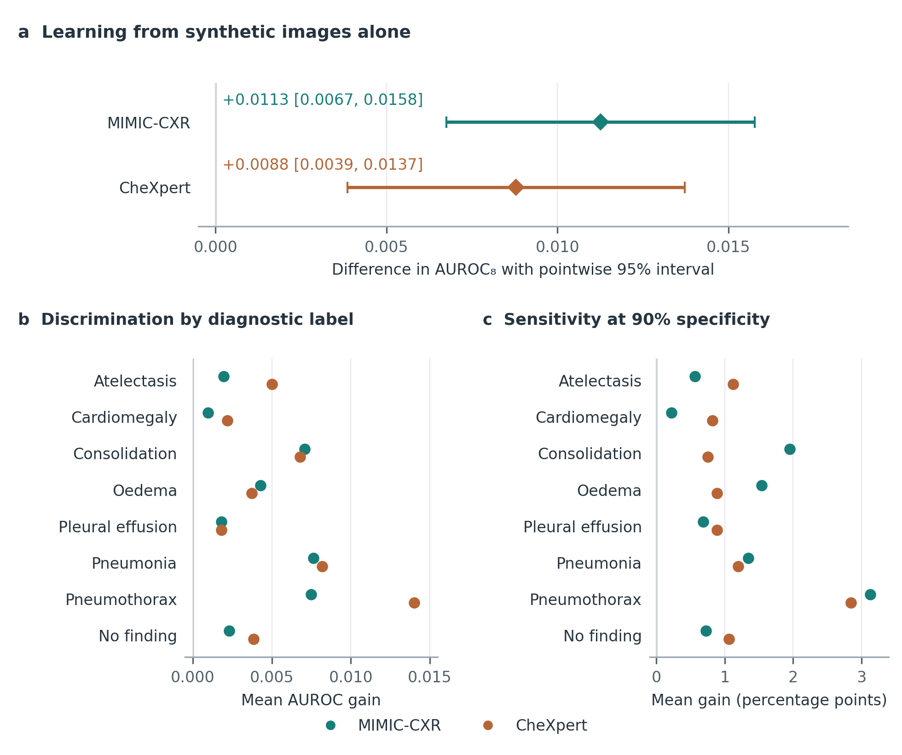
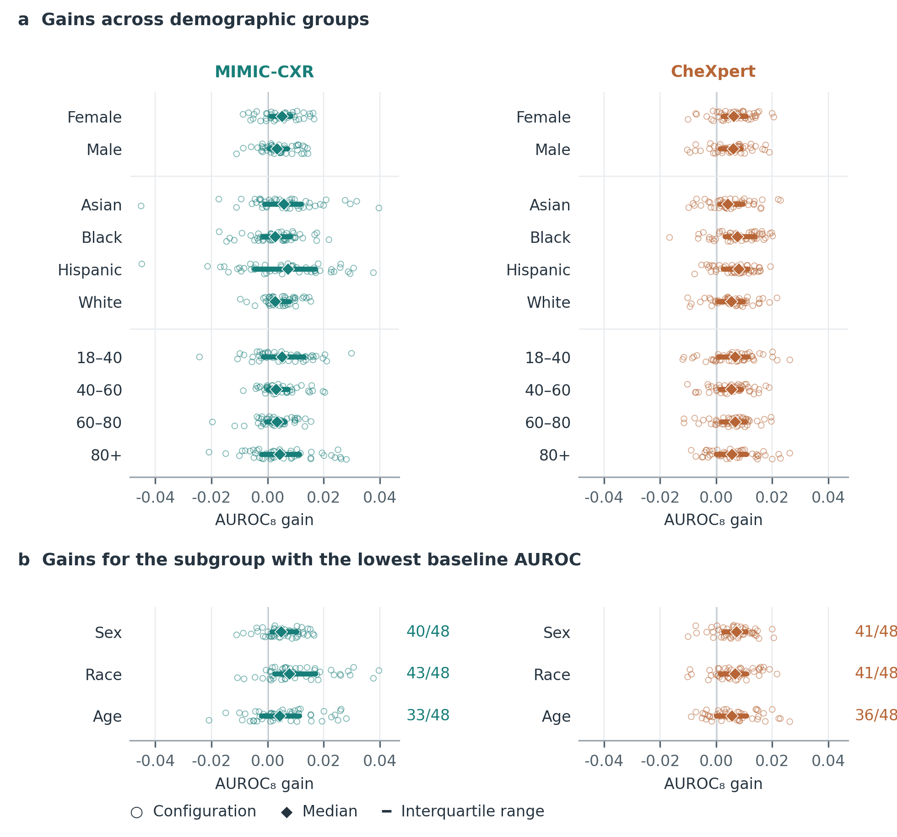

CompDiff enables fair and zero shot medical image generation across demographic intersections through compositional diffusion
Manuscript under review
1 Institute of Data Science, Faculty of Science and Engineering, Maastricht University, The Netherlands · 2 Department of Advanced Computing Sciences, Faculty of Science and Engineering, Maastricht University, The Netherlands · 3 VITO, Belgium · 4 Icahn School of Medicine at Mount Sinai, The Mount Sinai Hospital, New York City, USA · 5 Department of Radiology, Division of Abdominal Imaging, Massachusetts General Hospital, Harvard Medical School, Boston, USA · 6 Division of Gastroenterology, Massachusetts General Hospital, Boston, USA
Summary
Generators trained on demographically imbalanced medical data can fail at demographic intersections that never appear in training; we call this the imbalanced generator problem. CompDiff takes age, sex and race out of the text prompt and passes them through a Hierarchical Conditioner Network (HCN), which encodes each attribute separately and composes supervised demographic tokens alongside the clinical text. Across three independently trained runs per method, CompDiff reached the lowest mean FID on chest X-rays (74.7 versus 88.4 for RoentGen-v2 and 85.6 for FairDiffusion) and on fundus images (60.1 versus 72.7 and 64.2). It achieved the lowest mean FID-RadImageNet in all 16 chest X-ray intersections removed from training, and in a blinded study two radiologists gave it the highest mean scores for realism and agreement with the clinical impression on those unseen intersections.

Abstract
Medical image generators trained on imbalanced data can fail at demographic intersections absent from training. We introduce CompDiff, which encodes age, sex and race separately and composes supervised demographic tokens alongside clinical text. Across chest radiographs and fundus images, CompDiff improves overall and subgroup fidelity relative to prompt conditioning (RoentGen-v2) and loss reweighting (FairDiffusion). It generalises in zero-shot generation to 16 chest X-ray intersections excluded from training, achieving the lowest mean FID-RadImageNet in every intersection. In a blinded reader study of these unseen intersections, two radiologists gave CompDiff the highest mean scores among generators for anatomical realism and agreement with the clinical impression, and selected its images most often as the most realistic. Pretraining with CompDiff images improved downstream classification, while CompDiff audit cohorts reduced estimation error on rare intersections. These findings support compositional demographic conditioning for extending medical image synthesis to underserved populations.
Method
Prompt-conditioned generators such as RoentGen-v2 learn demographics from the text prompt. On MIMIC-CXR, the rarest age × sex × race intersections contain only 47–92 training images, and combined with rare pathologies some intersections are absent altogether. Reweighting the loss cannot help a group that has no training data. CompDiff instead treats demographic identity as compositional: a rare intersection such as “80+ Asian female” is composed from representations of age, sex and race learned from more abundant cells.
- Encode. Age is encoded as a continuous value (sinusoidal features and an MLP); sex and race each have their own learned categorical embedding. Demographics are removed from the text prompt, which keeps only the clinical impression.
- Compose. Three pairwise MLPs combine age + sex, age + race and sex + race, and a composition MLP fuses them into a shared demographic context. Each attribute is projected with this context to its own token, and a Gaussian latent supplies a fourth, composed token.
- Supervise. Auxiliary heads predict age, sex and race from their tokens and the joint demographic label from the composed token, so each attribute survives to the output.
- Condition. The 4 demographic tokens (1,024 dimensions each) are concatenated with CLIP’s 77 text tokens as cross-attention context for the Stable Diffusion 2.1 UNet.
Because attributes are learned separately and then composed, CompDiff can generate intersections removed from training. Generation at those unseen intersections did not depend on the factorised composer: an unstructured composer with a matched parameter count, keeping the separate attribute encoders and supervised output tokens, preserved fidelity within each withheld cell.
- Encode age continuously; sex and race as embeddings
- Pairwise MLPs + composition MLP give a shared context
- Project to age, sex, race and composed tokens
- Auxiliary heads supervise each token (training only)
d · 4 demographic tokenst · 77 text tokens[ t ‖ d ]
Intersectional Gallery
Generated medical images across age × sex × race intersections. Pick a modality, then toggle between RoentGen-v2 (prompt conditioning, “Baseline SD” in the paper’s figures), FairDiffusion and CompDiff. The paper’s Figure 7 draws its natural-distribution rows from this gallery.
Results
CompDiff is compared with RoentGen-v2 (demographics in the prompt) and FairDiffusion (adaptive loss reweighting), all built on Stable Diffusion 2.1. Generation metrics are means across three independently trained runs per method and modality.
Overall fidelity and conditioning alignment
Paper Figure 3. Top row: FID, FID-RadImageNet, MS-SSIM and mean prompt-alignment AUROC for chest X-ray and fundus. Bottom row: agreement with requested findings and demographics on chest X-ray (BioViL similarity, sex and race accuracy, age RMSE in years). Mean across three runs; hover a bar for the standard deviation. MS-SSIM has no “best”: it is read against the 0.25–0.75 reference band.
Takeaway. CompDiff had the lowest mean FID on both modalities: 74.7 ± 5.7 on chest X-rays versus 88.4 ± 4.7 for RoentGen-v2 and 85.6 ± 1.7 for FairDiffusion (a 15% reduction relative to RoentGen-v2), and 60.1 ± 4.3 on fundus versus 72.7 ± 3.7 and 64.2 ± 1.8 (17%). On fundus, FairDiffusion had the lowest FID-RadImageNet (5.51 versus 5.76), so Inception FID is the primary fundus measure. CompDiff had lower race accuracy (0.949) and higher age error (8.66 years) than the prompt-conditioned baselines; neither difference was statistically distinguishable across the three runs (p = 0.11 and p = 0.15).
Subgroup fidelity
Overall distance and equity-scaled FID (ES-FID), which combines overall fidelity with variation between subgroups; lower is better. Chest uses FID-RadImageNet and fundus uses Inception FID. Means across three runs (paper Figure 5a,b). best in column · CompDiff row highlighted in teal
| Modality | Method | Overall ↓ | Equity-scaled FID (ES-FID) ↓ | |||
|---|---|---|---|---|---|---|
| Sex | Race | Age | A×S×R | |||
| Chest X-ray |
RoentGen-v2 | 8.6 | 11.0 | 10.5 | 10.1 | 14.2 |
| FairDiffusion | 8.9 | 10.2 | 11.1 | 10.2 | 14.3 | |
| CompDiff | 6.6 | 8.5 | 8.4 | 8.0 | 12.1 | |
| Fundus | RoentGen-v2 | 72.7 | 84.4 | 111.7 | 128.8 | 186.3 |
| FairDiffusion | 64.2 | 76.3 | 105.6 | 123.0 | 182.2 | |
| CompDiff | 60.1 | 71.1 | 101.7 | 87.7 | 174.2 | |
Takeaway. CompDiff had the lowest distance in 28 of 29 overall, equity-scaled and subgroup comparisons; the exception was the Black fundus stratum, where FairDiffusion’s mean was lower by 1.1 FID. Among chest X-ray intersections with at least twenty images, CompDiff had the lowest FID-RadImageNet in all 16 cells, reducing cell distance by 14.9% relative to RoentGen-v2 and 18.1% relative to FairDiffusion. The fundus intersectional ES-FID is dominated by dispersion at small cell sizes, so the per-attribute measures are the more reliable fundus comparison.
Distribution coverage
Full chest X-ray test set, RadImageNet ResNet-50 features, k = 10 neighbours; higher is better (paper Table 2). Precision and Density measure fidelity; Recall and Coverage measure how much of the real distribution is reached.
| Method | Precision ↑ | Recall ↑ | Density ↑ | Coverage ↑ |
|---|---|---|---|---|
| RoentGen-v2 | 0.329 | 0.480 | 0.072 | 0.084 |
| FairDiffusion | 0.344 | 0.234 | 0.070 | 0.099 |
| CompDiff | 0.396 | 0.387 | 0.091 | 0.139 |
Generation at intersections removed from training
Two MIMIC-CXR training variants each withheld eight intersections: Holdout A the eight rarest, Holdout B the eight next rarest. Each method was trained three times per holdout (18 models). FID-RadImageNet compares generated images with real test images from the same withheld intersection.

Takeaway. CompDiff achieved the lowest mean FID-RadImageNet across three runs in all 16 withheld intersections. The CompDiff minus RoentGen-v2 difference was −2.36 (95% CI −3.71 to −1.02); the difference from FairDiffusion was −1.25 (−2.57 to 0.08). With Inception features, CompDiff kept the lowest mean in 12 of 16 cells. Giving RoentGen-v2 a 4× generation budget with verifier selection still left a CompDiff variant best in each of the 12 assessable withheld cells.
Radiologist assessment of unseen intersections
Two board-certified radiologists, blinded to source, rated chest X-rays from the 16 withheld intersections: 96 rater–set assessments over 92 distinct sets, 288 image ratings (paper Table 3). Realism 1–5, prompt correspondence −2 to +2 (mean ± SD); “most realistic” is the per-set forced-choice win rate. Real images were a hidden upper anchor in a subset of sets.
| Source | Realism ↑ | Prompt correspondence ↑ | Most realistic ↑ |
|---|---|---|---|
| CompDiff | 4.17(±1.11) | +0.47(±1.72) | 48% |
| RoentGen-v2 | 2.36(±1.33) | −0.05(±1.69) | 7% |
| FairDiffusion | 4.13(±1.05) | +0.01(±1.74) | 37% |
| Real (hidden anchor) | 4.92(±0.29) | +0.75(±1.86) | 92% |
Takeaway. Prompt correspondence was higher for CompDiff than for both RoentGen-v2 and FairDiffusion in the mixed-effects analysis (Benjamini–Hochberg-adjusted p = 0.005 and 0.031). Realism for CompDiff and FairDiffusion was close (4.17 and 4.13), both far above RoentGen-v2 (2.36). In the direct preference comparison, CompDiff was chosen over FairDiffusion 44 times to 35, which was not statistically significant (p = 0.37).
Downstream classification
DenseNet classifiers trained on CompDiff or RoentGen-v2 chest images, evaluated on real MIMIC-CXR and external CheXpert test sets. AUROC8 averages eight diagnostic labels. Four synthetic corpora: natural demographics at 1×, 2× and 3× the real training size, and a demographically balanced corpus.


Takeaway. Trained on synthetic images alone, CompDiff classifiers reached mean AUROC8 0.7962 versus 0.7849 on MIMIC-CXR and 0.7363 versus 0.7275 on CheXpert: differences of +0.0113 (95% CI 0.0067 to 0.0158) and +0.0088 (0.0039 to 0.0137). With synthetic pretraining and real fine-tuning, CompDiff improved AUROC8 in 40 of 48 matched configurations on each test set, and median gains were positive for all 10 sex, race and age groups and for the lowest-performing baseline subgroup within each attribute.
The manuscript also evaluates synthetic cohorts for auditing a fixed classifier and reports the conditioning-interface ablations.
Pretrained weights are released on Hugging Face: chest X-ray and fundus.
BibTeX
@unpublished{ibrahim2026compdiff,
title={CompDiff enables fair and zero shot medical image generation across demographic intersections through compositional diffusion},
author={Ibrahim, Mahmoud K. and Elen, Bart and Sun, Chang and Jiblawi, Ahmad and Saleh, Mohammed M. and Ibrahim, Maryam K. and Ertaylan, G\"okhan and Dumontier, Michel},
note={Manuscript under review},
year={2026}
}